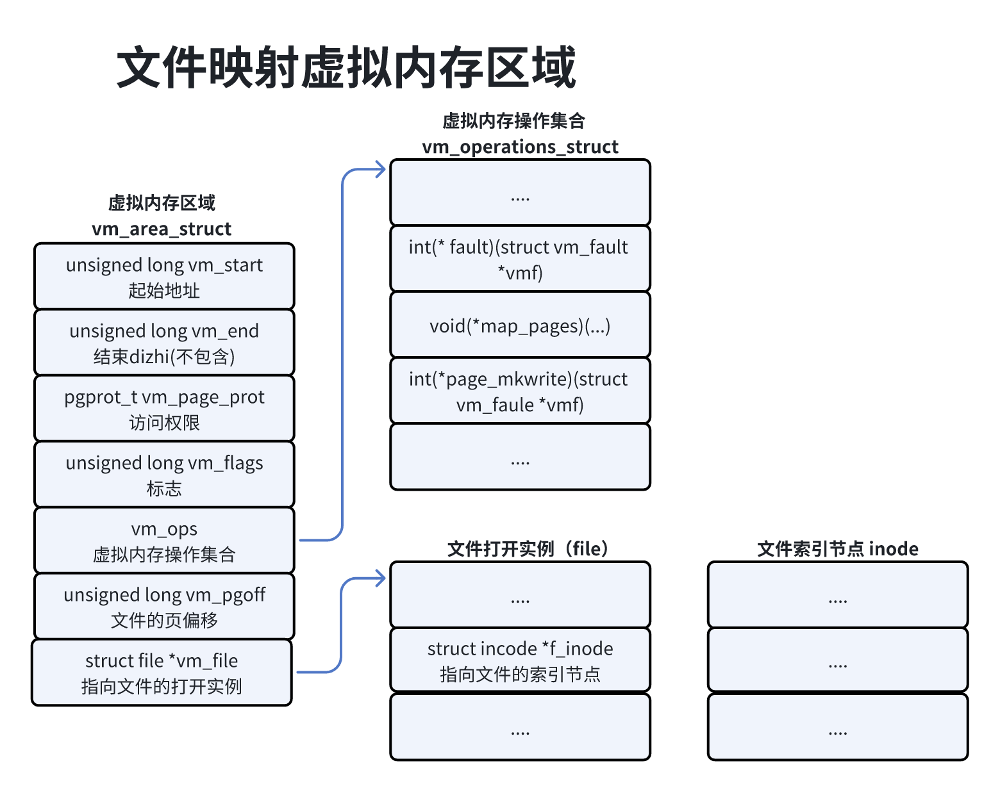
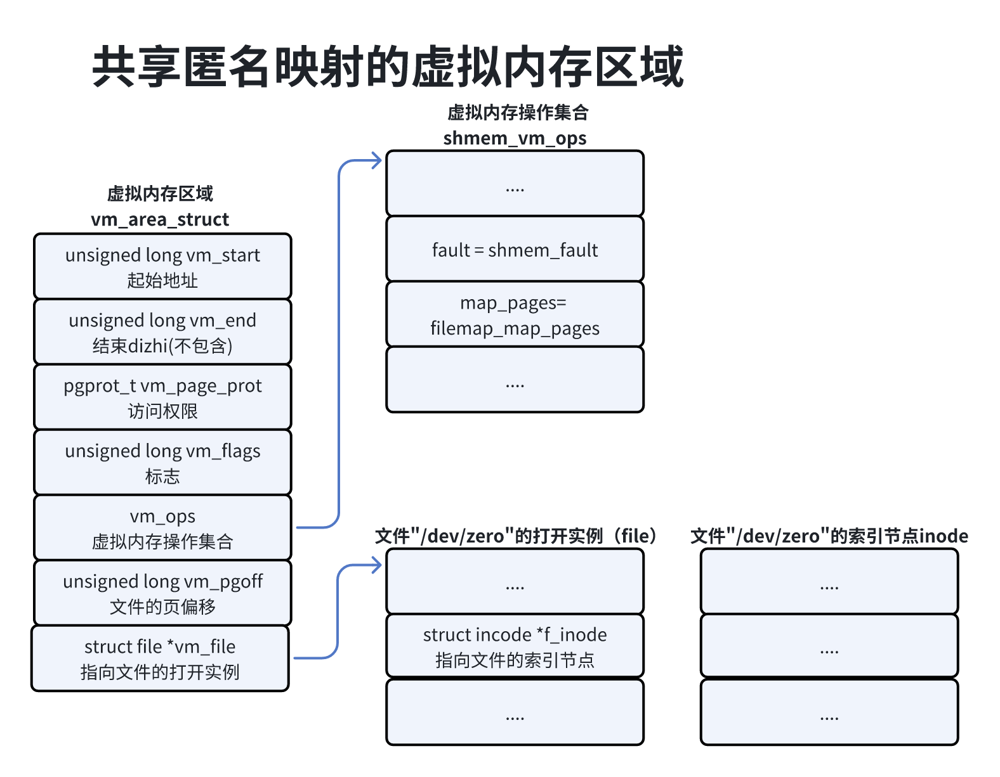
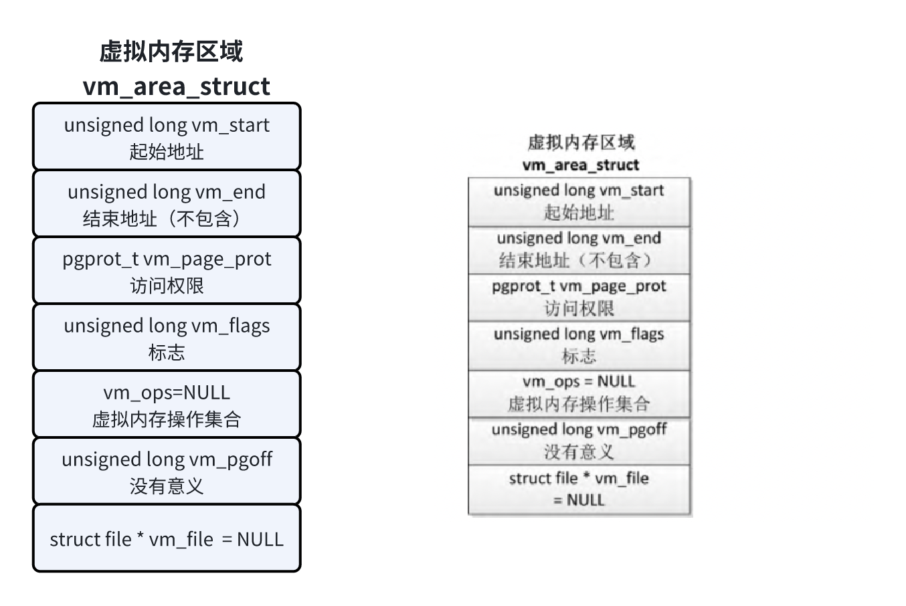
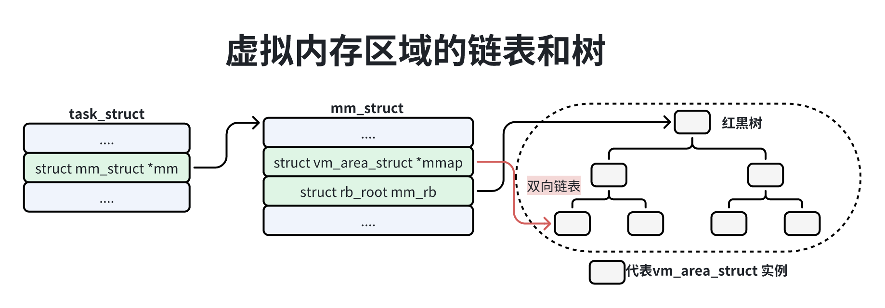
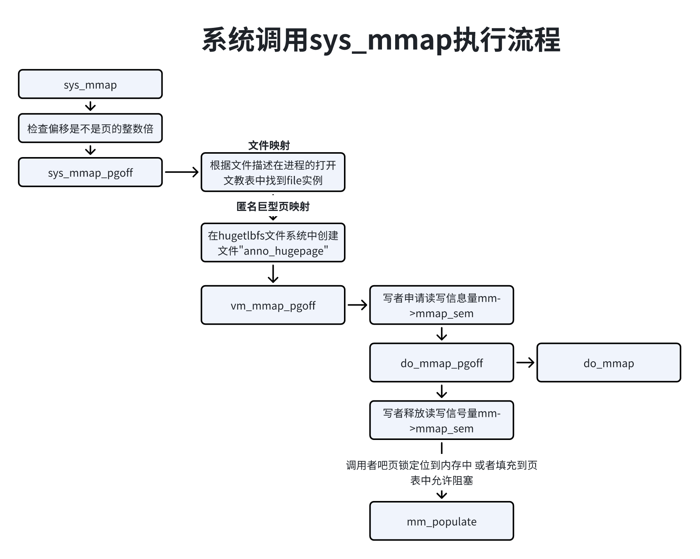
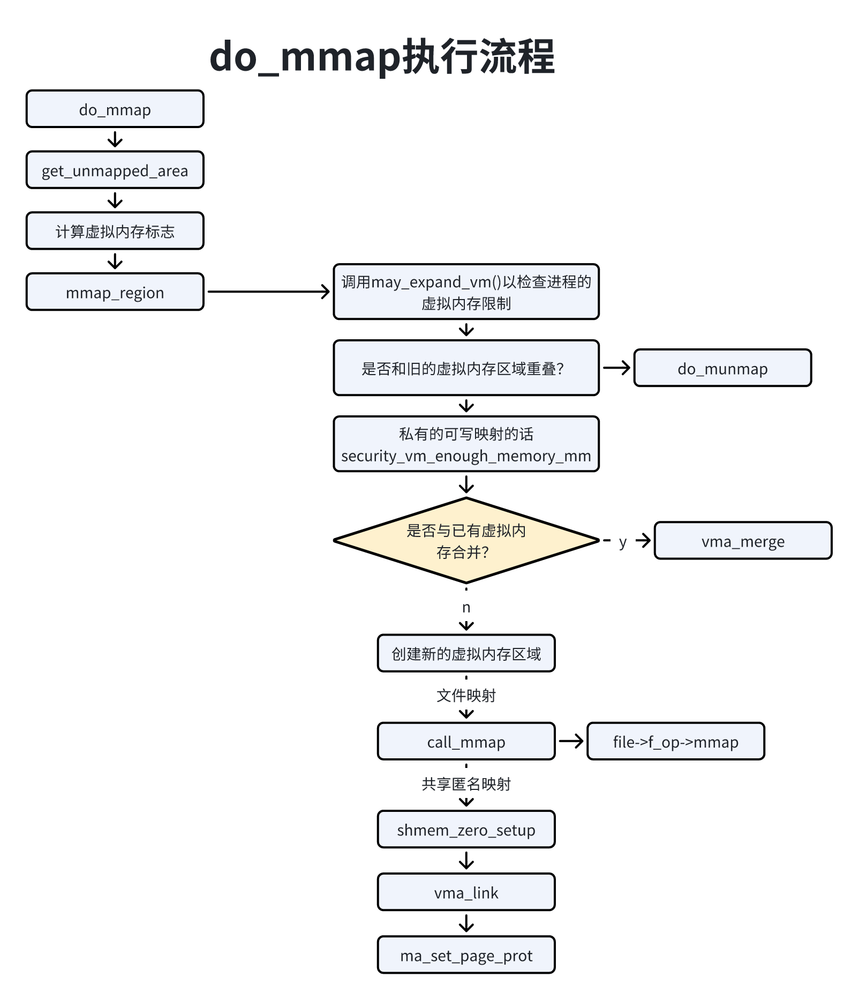
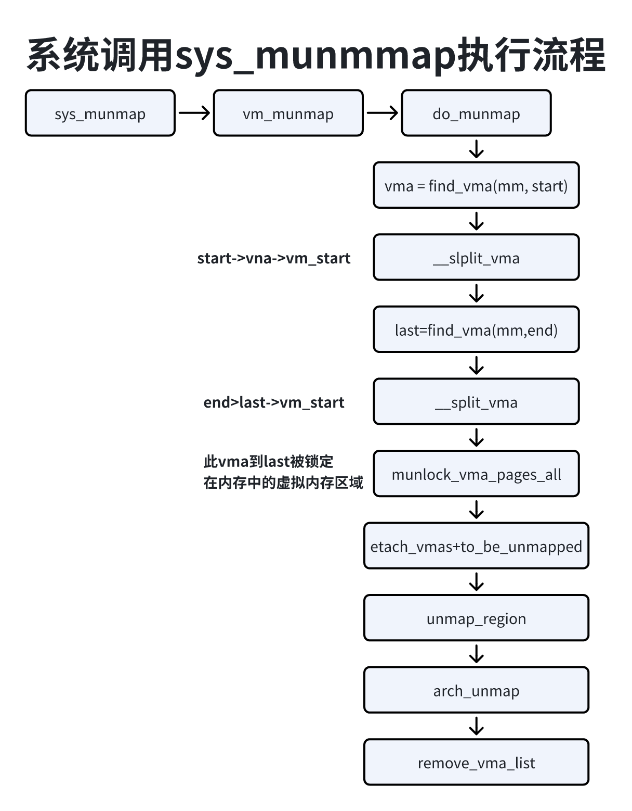

物理地址是处理器在系统总线上看到的地址，使用精简的指令集（Reduced Instruction Set Comuputer RSIC）的处理器通常只实现一个物理地址空间，外围设备和物理内存使用统一的物理地址空间。有些处理器架构把分配给外围设备的物理地址区域称为设备内存。
处理器通过外围设备控制器的寄存器访问外围设备，寄存器分为控制寄存器、状态寄存器和数据寄存器三大类，外围设备通常被连续的编制。处理器对外围设备寄存器的编址方式有2种：
1）I/O映射方式（I/O-mapped）：英特尔的x86处理器为外围设备专门实现一个单独的地址空间，称为”I/O地址空间“或”I/O端口克难攻坚“或”I/O端口空间“，处理器通过专门的I/O质量（如x86的in和out指令）来访问这一空间中的地址单元。
2）内存映射方式（memory-mapped）：使用精简指令集的处理器通常只实现一个物理地址空间，外围设备和物理内存使用统一的物理地址空间，处理器可以像访问一个内存党员那样访问外围设备，不需要提供转呢的I/O指令。
程序只能通过虚拟地址访问外设寄存器，内核提供了以下函数来把外设寄存器的物理地址映射到虚拟地址空间。
1）函数ioremap()把外设寄存器的物理地址映射到内核粗呢地址空间。
1void * ioremap(unsigned long phys_addr, unsigned long size, unsigned long flags);2）函数io_remap_pfn_range()把外设寄存器的物理地址映射到进程的用户虚拟地址空间。
21int to_remap_pfn_range(struct vm_area_struct *vma, unsigned long addr, unsigned long pfn,2 unsigned long size, pgprot_r prot);处了SPARC处理器以外，在其他处理器架构中函数iio+remap_pfn_range()和函数remap_pfn_range()等价。函数remap_pfn_range()用于把内训的物理页映射到进程的用户虚拟地址空间。
内核提供了函数iounmap()，它用来删除函数ioremap()创建的映射。
11void ionmap(void *addr);ARM64架构定了2种内存类型。
1）正常内存（Normal Memory）：包括物理内存和只读存储器（ROM）。
2）设备内存（Device Memory）：指分配给外围设备寄存器的物理地址区域。
对于正常内存，可以设置共享属性和缓存属性。共享属性用来定义一个位置是否可以被多个核共享，分为不可共享、内部共享。不可共享是指只被处理器的一个核使用；内部共享是指一个处理器的所有核共享或者多个处理器共享；外部共享是指处理器和其他观察者共享（比如图形处理单元或DMA控制器）。缓存属性用来定义访问时是否通过处理器的缓存。
设备内存的共享属性总是外部共享，换出属性总是不可缓存（即必须绕过处理器的缓存）。
ARM64架构根据3种属性把设备内存分为4种类型：
1）Device-nGnRnE，这种类型限制最严格。
2）Device-nGnRE。
3）Device-nGRE。
4）Device-GRE，这种类型限制最少。
3种属性分别如下：
1）聚集属性：G表示聚聚（Gathering），nG表示不聚集（non Gathering）。
聚集属性决定对内存区域的多个访问是否可以被合并一个总线事务。如果地址被标记为”不聚集“，那么必须按照程序里面的地址和长度访问。如果地址被标记为”聚集“，处理器可以把2个”写一个字节“的访问合并成一个”写2个字节“的访问，可以把对相同内存位置的多个访问合并，例如读相同位置2次，处理器只需要读1次，为2条质量返回相同的结果。
2）重排序属性：R表示重排序（Re-ordering），nR表示不重排序（non Re-ordering）。
这个属性决定对相同设备的多个访问是否可以重新排序，如果地址被标记为：”不重排序“，那么对同一个块的访问按照程序的顺序执行。
3）早期写确认属性：E表示早期写确认（Early Write Acknowledgement），nE表示不执行的早期写确认（non Early Write Acknowledgement）。
这个属性决定是否允许处理器和从属设备之间的中间缓冲区发送”写完成”确认。如果地址被标记为“不执行早起写确认”，那么必须由外围设备发送“写完成”确认。如果地址被标记为“早期写确认”，那么必须由外围设备发送“写完成”确认。如果地址被标记为“写早起确认”，那么允许写缓冲区在外围设备收到数据之前发送“写完成”确认。
目前ARN64处理器支持的最大物理地址宽度是48位，如果实现了ARMv8.2标准的大物理地址（Large Physical Address , LPA）支持，并且长度是64KB，那么物理地址的最大宽度是52位。
可以使用寄存器TCR_EL1（Translation Control Register for Exception Level 1, 异常级别1的转换控制器）的字段IPS（Intermediate Physical Address Size）控制物理地址宽度，IPS字段的长度是3位，IPS字段的长度是3位，IPS字段的值和物理地址宽度对应的关系如下表所示：
| IPS字段 | 物理地址宽度 |
|---|---|
| 000 | 32位 |
| 001 | 36位 |
| 010 | 40位 |
| 011 | 42位 |
| 100 | 44位 |
| 101 | 48位 |
| 110 | 52位 |
内存映射时在进程的虚拟地址空间中创建一个映射，分为一下2种：
1）文件映射：文件支持的内存映射，把文件的一个区间映射到进程的虚拟地址空间，数据源是存储设备上的文件。
2）匿名映射：没有文件支持的内存映射，把物理内存映射到进程的虚拟地址空间，没有数据源。
通常把文件映射的物理页称为文件页，把匿名映射的物理页称为匿名页。
根据修改是否对其他进程可见和是否传递到底层文件，内存映射分为共享映射和私有映射。
1）共享映射：洗牙数据时映射相同区域的其他进程可以看见，如果是文件支持映射，修改传递底层文件。
2）私有映射：第一次修改数据时会从数据源复制一个副本，然后修改副本，其他进程看不见，不影响数据源。
两个进程可以使用共享的文件映射实现共享内存，匿名映射通常是私有映射，共享的匿名映射只是可能出现在父进程和子进程之间。
在进程的虚拟地址空间中，代码段和数据段时私有的文件映射，未初始化数据段、堆和栈是私有的匿名映射。
内存映射原理如下：
1）创建内存映射的时候，在进程的用户虚拟地址空间中分配一个虚拟内存映射区域。
2）Linux内核采用延迟分配物理内存的策略，在进程第一次访问虚拟页的时候，产生缺页异常，如果是文件映射，那么分配物理页，把文件指定区间的数据读到物理页中，然后在页表中把虚拟页映射刀片物理页；如果是匿名映射，那么把分配物理页吗，然后在页表中把虚拟页映射到物理页。
内存管理子系统提供了以下常用的系统调用：
mmap()用来创建内存映射；
21void *mmap(void *addr, size_t length, int prot, int flags. int fd,2 off_t offset);mrenap()用来扩大或缩小已经存在的内存映射，可能同时移动；
21void *mremap(void *old_address, size_t old_size, size_t new_size, 2 int flags,.../* void *new_address */);munmap()用来删除内存映射；
11int munmap(void *addr, size_t length);brk()用来设置堆的上界；
11int brk(void *addr);remap_file_pages()用来创建非线性的文件映射，即文件区间和虚拟地址空间之间的映射不是线性关系，现在被废弃了；
mprotect()用来设置虚拟内存区域的访问权限；
11int mprotect(void *addr,size_t len, int port);madvise()用来向内核提供内存使用的建议，应用程序高速内核期望怎样使用指定的虚拟内存，以便内核可以选择合适的于都和缓存技术。
11int madvise(void addr, size_et length, int advice);
在内核中可以使用以下2个函数。
remap_pfn_range把内存的物流业映射到进程的虚拟地址空间，这个函数的用处是实现进程和内核共享内存。
21int remap_pfn_range(struct vm_area_struct *vma, unsigned long addr,2 unsigned long pfn, unsigned long size, pgrot prot);io_remap)pfn_rang把外设寄存器的物理地址映射到进程的虚拟地址空间，进程可以直接访问外设寄存器。
21int io_remap_pfn_range(struct vm_area_struct *vma, unsigned long addr,2 unsigned long pfn, unsigned long size, pgprot prot);应用程序通常使用C标准库提供的额函数malloc()申请内存，glibc库的内存分配器ptmalloc使用brk或mmap向内核申请以页为单位的虚拟内存，然后把页划分成小内存块分配给应用程序。默认的阈值是128KB，如果应用程序申请的内存长度小于阈值，pptmaloc分配器使用brk向内训申请虚拟内存，否则ptmalloc分配器使用namap向内核申请虚拟内存。
应用程序是可以直接使用mmap向内核申请虚拟内存。
系统调用mmap()有以下几个作用：
进程创建匿名的内存映射，把内存的物理页映射到进程的虚拟地址空间；
进程把文件映射到进程的虚拟地址空间，可以像访问内存一样访问文件，不需要调用系统调用read()和write()访问文件，从而避免用户模式和内核模式之间的额切换，提高读写文件的速度
两个进程针对同一个文件创建的内存共享，实现贡献内存。
函数原型：
11void *mmap(void *addr,size_t length, int prot, int flags, int fd, off_t offset);addr：起始虚拟地址，如果是0内核会选择虚拟地址，如果不是0内核把这个参数作为提示，在附近荀泽虚拟地址；
length：映射的长度，单位是字节；
prot：保护位；
41PROT_EXEC：页可执行；2PROT_READ：页可读；3PROT_WRITE：页可写；4PROT_NONE：页不可访问；flags：标志；
111# 常用的标志2MAP_SHARED：共享映射；3MAP_PRIVATE：私有映射；4MAP_ANONYMOUS：匿名映射；5MAP_FIXED：固定映射，不要把参数addr结束为一个提示，6 映射的起始地址必须是参数addr，必须是页长度的整数倍；7MAP_HUGETLB：使用巨型页；8MAP_LOCKED：把页锁在内存中；9MAP_NORESERVE：不预留物理内存；10MAP_NONBLOCK：不阻塞，和MAP+POPULATE联合使用才有意义，从Linux2.6.23开始，该标志导致MAP_POPULATE什么都不做；11MAP_POPULATE：填充页表，即分配并且映射到物理页，如果是文件映射，该标志导致预读文件。fd：文件描述符，仅当创建文件映射的时候，这个参数才有意义，如果是匿名映射，有些实现要求参数fd是-1，可移植的应用程序应该保证参数fd是-1。
offset：偏移，单位是字节，必须是页长度的整数倍，仅当创建文件映射的时候这个参数才会有意义。
返回值：如果成功返回起始虚拟地址，否则返回错误号；
mprotect用来设置虚拟内存区域的访问权限。
函数原型：
11int mprotect(void *addr, size_t len, int prot);入参：
addr：起始虚拟地址，必须是页长度的整数被；
len：虚拟内存区域的长度，单位是字节；
prot：保护位；
PROT_EXEC：页可执行；
PROT_READ：页可读；
PROT_WRITE：页可写；
PROT_NONE：页不可访问；
返回值：
如果成功返回0，失败返回错误号；
madvise()用来向内核提出内存使用的建议，应用程序告诉内核期望怎样使用指定的勋内存区域，以便内核可以选择合适得预读和缓存技术。
函数原型：
11int madvise(void *addr, size_t length, int advice);入参：
addr：起始虚拟基地址，必须是页长度的整数倍；
length：虚拟内存区域的长度，单位是字节；
advice：建议；
211POSIX 标准定义的建议值如下：2 MADV_NORMAL：不需要特殊处理，这是默认值；3 MADV_RANDOM：预期随机访问指定范围的页，预读的用处比较小；4 MADV_SEQUENTIAL：预期按照顺序访问指定范围的页，所以可以激进的于都指定范围的页，并且进程在访问页以后很快被释放。5 MADV_WILLENEED：预期很快就会访问指定范围的页，所以可以于都指定范围的页；6 MADV_DONTNEED：预期近期不会访问指定范围的页，即进程已经处理完指定范围的页，内核可以释放相关的资源；7 8Linux私有的建议值：9 MADV_REMOVE：进程想要释放指定范围的页和相关的后背存储；10 MADV_DONTFORL：在执行fork()的时候从子进程的地址空间删掉指定范围的页；11 MADV_DOFORK：取消MADV_DONTFORK，在执行fork()的时候不从子进程的地址空间删掉指定范围的页；12 MADV_HWPOSSION：毒化指定范围的页 ，向内存损坏一样处理对指定范围的页的访问；13 MADV_MEGREABLE：允许KSM（Kernel Samepage Mergeing）合并数据相同的页；14 MADV_UNMERGEABLE：取消MADV_MERGEABLE，不允许合并数据相同的页；15 MADV_SOFT_OFFLINE：指定范围的页软下线，即内存也被保留，但是洗一次访问的时候把数据复制到新的物理页，16 旧的物理页下线，堆进程不可见，这个特性用来测试处理内存错误的代码；17 MADV_HUGEPAGE：允许指定范围使用透明巨型页；18 MADV_NOHUGEPAGE：不允许指定范围使用透明巨型页；19 MADV_DONTEUMP：生成核心转储文件的是偶不要包含指定范围的页；20 MADV_DODUMP：取消MADV_DONTDUMP，生成核心转储文件的时候包含指定范围的页；21 MADV_FREE：从4.5版本开始支持，进程不需要指定范围的页，内核可以释放这些页，释放可以延迟到内存不足的时候；返回：
如果成功，返回时0，失败返回错误号；
虚拟内存区域是分配给集成的一个虚拟地址范围，内核使用结构体vm_area_struct描述虚拟内存区域，主要成员：
| 成员 | 说明 |
|---|---|
| unsigned long vm_start | 起始地址 |
| unsigned long vm_end | 结束地址，区间是[起始地址, 结束地址)，不包含结束地址 |
| struct vm_area_struct *vm_next, *vm_prev | 虚拟内存区域链表，按起始地址排序 |
| struct rb_node vm_rb | 红黑树节点 |
| struct mm_struct *vm_mm | 指定内存描述符，即虚拟内存区域所属的用户虚拟地址空间 |
| pgprot_t vm_page_prot | 保护位，即访问权限 |
| unsigned ong vm_flags | 标志 |
| struct{ struct rb_node rb; struct long rb_subtree_last; } | 为了支持查询一个文件区间被映射到哪些虚拟内存区域把一个文件映射到所有虚拟内存区域加入该文件的地址空间结构体address_space的陈冠i_mmap指向的区间树 |
| struct list_head anno_vma_chain | 把虚拟内存区域关联的所有anno_vma用来组织匿名页被映射到所有虚拟地址空间 |
| struct anno_vma *anno_vma | 指向一个anno_vma实例，结构体anno_vma用来组织匿名页被映射到所有虚拟地址空间 |
| const struct vm_operations_struct *vm_ops | 虚拟内存操作集合 |
| unsigned long vm_pgoff | 文件偏移，单位是页 |
| struct *vm_file | 文件，如果是私有的匿名映射，该成员是空指针 |
文件映射的虚拟内存如图所示：

1）成员vm_file指向文件的一个打开实例（file）。索引节点代表一个文件，描述文件的属性；
2）成员vm_pgoff存放文件的以页为单位的偏移；
3）成员vm_ops指向虚拟内存操作集合，创建文件映射的时候调用文件操作集合中的mmap方法（file->f_op->mmap）以注册虚拟内存操作集合。比如：假设文件属性是EXT4文件系统，文件操作集合中的mmap方法是函数ext4_file_mmap，该函数把虚拟内存区域的成员vm_ops设置为ext4_file_vm_ops。
共享匿名映射的虚拟内存区域如下图所示，共享匿名映射的实现原理和文件映射相同，区别是共享匿名映射关联的文件是内核创建的内部文件。在内存文件系统tmpfs中创建一个名为”/dev/zero“的文件，名字没有意义，创建2个共享匿名映射就会闯将2个名为”/dev/zero“的文件，2个文件是独立的毫无关系。

1）成员vm_file指向文件的一个打开实例（file）；
2）成员vm_pgoff存放文件的以页为单位的偏移；
3）成员vm_ops指向共享内存的虚拟内存操作集合shmem_vm_ops；
私有匿名映射的虚拟内存区域如下图所示：

1）成员vm_file没有意思，是空指针；
2）成员vm_pgoff没有意义；
3）成员vm_ops是空指针；
页保护位（vm_area_struct.vm_page_prot）：描述虚拟内存区域的访问权限，内核定义了一个保护位映射数组，把VM_READ、VM_WRITE、VM_EXEC和VM_SHARED这4个标志转换成保护位组合。
每种处理器架构需要定义__P000到__S111到宏，P代表私有，S代表共享，后面3个数组表示可读、可写和可执行，1表示可以，0表示不能。
x1// 位置： mm/mmap.c2
3pgprot protection_map[6] = {4 _P000, _P001,_P010, _P011, _P100, _P101,_P110, _P111,5 _S000, _S001,_S010, _S011, _S100, _S101,_S110, _S1116};7
8pgprot_t vm_get_page_prot(unsigned long vm_flags)9{10 return _pgprot(pgprot_val(protection_map[vm_flags & (VM_READ|VM_WRITE|VM_EXEC|VM_SCHED)])11 | pgprot(arch_vm_get_page_prot(vm_flags)));12}函数arch_vm_get_page_prot由每种处理器架构自定义，默认实现如下：
51// 位置 include/linux/mman.h2
3结构体vm_area_struct的成员vm_flags存放勋内存区域的标志，头文件”include/linux/mm.h“定义了各种标志，常用的标志：
VM_READ、VM_WRITE、VM_EXEC和VM_SHARED分别表示可读、可写、可执行和可以被多个线程共享；
VM_MAYREAD：表示允许设置VM_READ；VM_MAYWRITE表示允许设置VM_WRITE；VM_MAYEXEC表示允许设置VM_EXEC；VM_MAYSHARE表示允许设置VM_SHARED；这4个标志用来限制系统调用mprotect可以设置的访问权限；
VM_GROWSDOWN：表示虚拟内存区域可以向下（低的虚拟地址）扩展，VM_STACK表示虚拟内存区域是栈，绝对多数处理器的栈是向下扩展，VM_STACK等价于VM_GROWSUP；
VM_PENMAP：表示帧号（PageFrame Number， PEN）映射，特殊映射不希望关联页描述符，直接使用页帧号，可能是因为页描述符不存在，也可能是因为不想使用页描述符；
VM_MIXEDMAP：表示映射混合使用页帧号和页描述符；
VM_LOCKED：表示页被锁定在内存中，不允许换出到交换区；
VM_SEQ_READ：表示进程从头到尾按顺序读一个文件，VM_RAND_READ表示进程随机读一个文件，这2个标志用来提示文件系统，如果进程按顺序读一个文件，文件系统可以预读文件，提高性能；
VM_DONTCOPY：表示调用fork来创建子进程时不把虚拟内存区域复制给子进程；
VM_ACCOUNT：表示虚拟内存区域需要记账，判断所有进程申请的虚拟内存的总和是否超过物理内存容量；
VM_NOrESERVE：表示不需要预留物理内存；
VM_HUGETLB：表示虚拟内存区域使用标准巨型页；
VM_ARCH_1和VM_ARCH_2：由各种处理器架构自定义；
VM_HUGEPAGE：表示虚拟内存区域允许使用透明巨型页，VM_NOHUGEPAGE表示虚拟内存区域不允许使用透明巨型页；
VM_MERGEABLE：表示KSM（内核相同页合并， Kernel Samepage Merging）可以合并数据相同项；
虚拟内存操作集合：vm_operations_struct，定义了虚拟内存区域的各种操作方法，代码如下：
191// 位置：include/linux/mm.h2
3struct vm_operations_struct {4 void (*open)(struct vm_area_struct * area);5 void (*close)(struct vm_area_struct * area);6 int (*mremap)(struct vm_area_struct * area);7 int (*fault)(struct vm_fault *vmf);8 int (*huge_fault)(struct vm_fault *vmf, enum page_entry_size pe_size);9 void (*map_pages)(struct vm_fault *vmf,10 pgoff_t start_pgoff, pgoff_t end_pgoff);11
12 // 通知以前的只读页即将变成可写，如果返回一个错误，将会发送信号SIGBUS给进程13 int (*page_mkwrite)(struct vm_fault *vmf);14
15 // 使用VM_PENMAP或者VM_MIXEDMAP时调用，功能和page_mkwrite相同16 int (*pfn_mkwrite)(struct vm_fault *vmf);17
18 ...19};open方法：在创建虚拟内存区域时调用，通常不使用，设置为空指针；
close方法：在删除虚拟内存区域是调用，通常不使用，设置空指针；
mremap方法：使用系统调用mremap移动虚拟内存区域时调用mremap方法；
fault方法：访问文件映射的虚拟页时，如果没有映射到物理页，生成缺页异常，异常处理程序调用fault方法把文件的数据读到文件的页缓存中；
huge_faule方法：和fault方法类似，区别是huge_fault方法针对使用透明巨型页的文件映射；
map_pages方法：读文件映射的虚拟页时，如果没有映射到物理页，生成缺页异常，异常处理程序除了读入正在访问的文件页，还会预读后续的文件页，调用map_pages方法在文件的页缓存中分配物理内存；
page_mkwrite方法：第一次写私有的文件映射时，生成页错误异常，异常处理器程序执行写时复制，调用page_mkwrite方法通知文件系统页即将变成可写，以便文件系统检查是否允许写，或者等待页进入合适的状态；
pfn_mkwrite方法：和page_mkwrite类似，区别是pfn_mkwrite方法是对页帧号映射和混合映射；
如下图所示，进程的虚拟内存按2种方法排序：

双向链表：mm_struct.mmap指向diyigevm_area_struct实例；
红黑树：mm_struct.mm_rb指向红黑树的根；
虚拟内存区域使用起始地址和结束地址描述，链表按起始地址递增排序，红黑树是平衡二叉树，按起始地址排序，使用红黑树好处：
在红黑树中查找一个虚拟内存区域速度快；
增加一个新的区域时，现在红黑树中找到刚好在新区域前面的区域，然后向链表和树中插入新区域，可以避免扫描链表；
C标准库封装了函数mmap用来创建内存映射，内核提供了POSIX标准订一份系统调用mmap：
21aslinkage long sys_mmap(unsigned long addr,unsigned long len, unsigned long prot,2 unsigned long flags, unsigned long fd, off_t off);Linux内核2.3.31版本开始提供了私有的系统调用mmap2：
41asmlinkeage long sys_mmap2(unsigned long addr, unsigned long len,2 unsigned long prot, unsigned long flags,3 unsigned long fd, off_t off4);两个系统调用区别是：mmap指定的偏移的单位是字节，而mmap2指定的偏移单位是位，有的处理器架构实现了这2个系统调用，有的处理器架构只实现了其中一个系统调用，比如ARM64只实现了mmap；
系统调用sys_mmap的执行流程如下图所示：

1）检查偏移是不是页的整数倍，如果偏移不是页的整数倍，返回”-EINVAL“；
2）如果偏移是页的整数倍，那么把偏移转换成以页为单位的偏移，然后调用函数sys_mmap_ppgoff；
函数sys_mmap_pgoff执行流程：
1）如果创建文件映射，根据文件描述在进程的打开文件表中找到file实例；
2）如果是创建匿名巨型页映射，在hugetlbfs文件系统中创建文件”anno_hugepage“，并且创建该文件的一个打开实例file；
注意：文件名没有实际意义，创建匿名巨型页映射2次，就会在hugetlbfs文件系统中创建2个名为”anno_gugepage“的文件，这2个文件没有关联；
3）调用函数vm_mmap_pgoff进行处理；
函数vm_mmap_pgoff执行流程：
1）以写者身份申请写信号量mm->mmap_sem；
2）把创建内存映射的主要工作委托给函数do_mmap；
3）释放读写信号量mm->mmap_sem；
4）如果调用者要求把页锁定在内存中，或者要求填充页表并且允许阻塞，那么调用函数mm_populate，分配物理页，并且在页表中把虚拟页映射到物理页；
常见的情况是：创建内存映射的时候不分配物理页，等到进程第一次访问虚拟页的时候，生成页错误异常，也错无异常处理程序分配物理页，在页表中把虚拟页映射到物理页中；
函数do_mmap执行流程

函数get_ummaped_area：从进程的虚拟地址空间分配一个虚拟地址范围，会根据情况调用特定函数来分配虚拟地值范围；
a）如果是创建文件映射或匿名巨型页映射，调用file->f_op->get_unmapped_area来已分配虚拟地址范围；
b）如果是创建共享的匿名映射，调用shmem_get_unmapped_area分配虚拟地址范围；
c）如果是创建私有匿名映射，调用mm->get)unmapped_area来分配虚拟地址范围，ARM64架构的内核在装载程序时，如果选择传统布局，函数arch_pick_mmap_layout把mm->get_unmapped_area设置为函数arch_get_unmapped_area；
计算虚拟内存标志：
41vm_flags |= calc_vm_prot_bits(prot, pkey) 2 | calc_vm_flag_bits(flags) 3 | mm->defl_flags 4 | VM_MYREAD | VM_MAYWRITE | VM_MAYEXEC把系统调用中指定的保护位和标志合并到一个标志集合中，函数calc_vm_prot_bits把以“PROT”开头的保护位转换成以“VM”开头的标志，函数calc_vm_flag_bits把以“MAP_”开头的标志转换以“VM_”开头的标志。
mm->def_flags是默认的虚拟内存标志：进程默认的虚拟内存标志时VM_NOHUGEPAGE，即不使用透明巨型页，内核线程默认的虚拟内存标志时0。
VM_MAYREAD表示允许设置标志VM_READ，VM_MAYWRITE表示允许设置壁纸VM_WRITE，VM_MAYEXEC表示允许设置标志VM_EXEC。这3个标志时系统调用mmprotect所需要的。
调用函数mmap_region来创建虚拟内存区域。
函数mmap_region负责创建虚拟内存区域，执行流程：
1）调用函数may_expand_vm检查进程申请的虚拟内存是否超过限制：首先会检查（进程的虚拟内存总数+申请的页数）是否超过地址空间限制，mm->totak_vm+npages>rlimit(RLIMIT_AS)>> PAGE_SHIFT。
如果是私有可写映射，并且不是栈，那么检查（进程数据的虚拟内存总数+申请的页数）是否超过最大数据长度：mm->data_vm+pages>rlimit(RLIMIT_DATA)>>PAGE_SHIFT。
2）如果是固定映射，调用者强制指定虚拟地址范围，肯呢个和旧的虚拟内存区区域重叠，那么需要从旧的虚拟内存区域删除重叠的部分。
3）如果私有的可写映射，检查所有进程申请的虚拟内存的总和是否超过物理内存的容量。
151/**2 * 如果需要记账的映射，那么检查所有进程申请的虚拟内存总和是否超过物理内存的容量3 * 需要记账的映射具备以下3个条件4 * 1）私有的可写映射5 * 2）不是标准巨型页（因为标准巨型页单独记账）6 * 3）需要预留物理内存（即未设置VM_NORESERVE）7 */8if(accountalbe_mapping(file, vm_flags){9 charged = len>>PAGE_SHIFT;10 // 根据虚拟内存过量提交的策略，判断物理内存是否足够11 if(security_vm_enough_memory_mm(mm, charged))12 return -ENOMEM;13 14 vm_flags |= VM_ACCOUNT;15}4）如果可以和已有虚拟内存区域合并，那么调用函数vma_merge和已有的虚拟内存区域合并。
5）如果不能和已有的虚拟内存区域合并，处理如下：
1、创建新的虚拟内存区域；
2、如果是文件映射，那么调用文件的文件操作集合中的mmap方法（file->f_op->mmap），mmap方法的主要功能是设置虚拟内存区域的虚拟内存操作集合（vm_area_struct.vm_ops），其中的fault方法很重要，第一次访问虚拟页的时候，出发页错误异常，异常处理程序将调用虚拟内存操作集合中的fault方法把文件的数据读到内存。
文件的文件操作集合是在打开文件的时候设置，和文件所属的文件系统相关。
很多文件系统把文件操作集合中的mmap方法设置为公共函数generic_file_mmap，函数generic_file_mmap的主要功能是虚拟内存区域的虚拟内存操作集合设置为generic_file_vm_ops，其中fault方法是函数filemap_fault。
EXT4文件系统把文件操作集合中的mmap方法设置为函数ext4_file_mmap，函数ext4_file_mmap的主要功能是把虚拟内存区域的虚拟内厝操作集合设置为ext4_file_vm_ops，其中fault方法是函数ext4_filemap_fault。
3、如果是共享的虚拟映射，那么在内存文件系统tmpfs中创建一个名为“/dev/zero”的文件，并创建文件的一个打开实例file，虚拟内存区域的成员vm_file指向这个打开实例，把虚拟内存操作集合设置为shmem_vm_ops，如果没哟开启共享内存的配置宏CONFGI_SHMEM，shmem_vm_ops等价于generic_fils_vm_ops。
4、调用函数vma_link，把虚拟内存区域添加到链表和红黑树中，如果虚拟内存区域关联文件，那么把虚拟内存区域添加到文件的区间树中，文件的区间数用来跟踪文件被映射到哪些虚拟内存区域。
5、调用函数vma_set_page_prot，根据虚拟内存标志（vma->fm_flags）计算页保护位（vma->vm_page_prot），如果共享的可写映射想要把页标记为只读，目的是跟踪写事件，那么从页保护位删除可写为。
虚拟内存过量提交是指所有进程提交的虚拟内存的总和超过了物理内存的容量，内存管理子系统支持3种虚拟内存过量提交策略。
1）OVERCOMMIT_GUESS(0)：猜测，估算可用内存的数量，因为没法精确计算可用内存的数量，所以说是猜测；
2）OVERCOMMIT_ALWAYS(1)：总是允许过量提交；
3）OVERCOMMIT_NERVER(2)：不允许过量提交；
默认策略是猜测，用户可以通过文件“/proc/sys/vn/overcommit_memory“修改策略。
在创建新的内存映射时，调用函数__vm_enough_memoty根据虚拟内存过量提交策略判断内存是否足够，主要代码：
721// 位置： mm/util.c2
3int __vm_enough_memory(struct mm_struct *mm, long pages, int cap_sys_admin)4{5 long free, allowed, reserve;6 ...7 // 如果使用总是允许过量提交的策略，那么允许创建新的内存映射8 if (sysctl_overcommit_memory == OVERCOMMIT_ALWAYS)9 return 0;10
11 // 如归使用猜测的过量提交策略，那么估算可用内存的数量的话12 if (sysctl_overcommit_memory == OVERCOMMIT_GUESS) {13 // 空闲页加上文件页，文件页有后备存储设备支持，可以回收14 free = global_page_state(NR_FREE_PAGES);15 free += global_node_page_state(NR_FILE_PAGES);16
17 // 共享内存不应该算作空闲页，他们不能被释放，只能换出到交换区18 free -= global_node_page_state(NR_SHMEM);19
20 // 加上交换区的空闲页数21 free += get_nr_swap_pages();22 23 // 加上可回收的内存缓存页，使用SLAB_RECLAIM_ACCOUNT标志创建的内存标志，24 // 宣城可回收，dentry和incode缓存应该属于这种情况25 free += global_page_state(NR_SLAB_RECLAIMABLE);26
27 if (free <= totalreserve_pages)28 goto error;29 else30 // 减去保留的页数31 free -= totalreserve_pages;32
33 // 如果进程没有系统管理员权限，减去根用户保留的页数34 if (!cap_sys_admin)35 free -= sysctl_admin_reserve_kbytes >> (PAGE_SHIFT - 10);36
37 // 如果可用内存的页数大于申请的页数，允许创建新的内存映射38 if (free > pages)39 return 0;40
41 goto error;42 }43 44 /**45 * 如果不允许过量提交的策略的情况下46 */47
48 // 计算提交内存的上限，有2个控制参数：49 // sysctl_overcommit_kbytes是字节数默认0、sysctl_over_commit_ratio是比例值默认50、50 // 如果sysctl_overcommit_kbytes不是0，上限等于”sysctl_over_commit_rati + 交换区的空闲页数“51 // 否则上限 等于”（物理内存容量-巨型页总数） * sysctl_overcommit_ratio / 100 + 交换区的空闲页数“52 allowed = vm_commit_limit();53 54 // 如果进程没有系统管理权限，需要为根用户保留一部分内存55 if (!cap_sys_admin)56 allowed -= sysctl_admin_reserve_kbytes >> (PAGE_SHIFT - 10);57
58 // 为了防止一个用户启动一个消耗内存大的进程，保留一部分内存”进程虚拟内存长度的1/32“59 // 和用户保留的页数的最小值60 if (mm) {61 reserve = sysctl_user_reserve_kbytes >> (PAGE_SHIFT - 10);62 allowed -= min_t(long, mm->total_vm / 32, reserve);63 }64
65 // vm-vommitted_as是所有进程提交的虚拟内存的总和，如果小于allowed那么允许创建新的内存映射66 if (percpu_counter_read_positive(&vm_committed_as) < allowed)67 return 0;68error:69 vm_unacct_memory(pages);70
71 return -ENOMEM;72}系统调用mummap用来删除内存映射，有2个参数：起始地址和长度；
系统调用munmap执行流程如下图所示：

根据起始地址找到要删除的第一个虚拟内存区域vma；
如果只删除虚拟内存区域vma的一部分，那么分离；IE虚拟内存区域vma；
根据结束地址找到要删除的最后一个虚拟内存区域last；
如果只删除虚拟内存区域last的一部分，那么分裂虚拟机内存区域last；
针对所有删除目标，如果虚拟内存区域被锁定在内存中（不允许换出到交换区），那么调用函数munlock_vma_pages_all以解除锁定；
调用函数detach_vmas_to_be_unmapped，把所有删除目标从进程的虚拟内存区域链表和树中删除，单独组成一条临时的链表；
调用函数umap_region，针对所有删除的目标，在进程的页表中删除映射，并且从何处理器页表缓存中删除映射；
调用函数arch_unmap执行处理器架构特定的处理。各种处理器架构自定义函数arch_unmmap，它默认是一个空函数；
调用函数remove_vma_list删除所有目标；